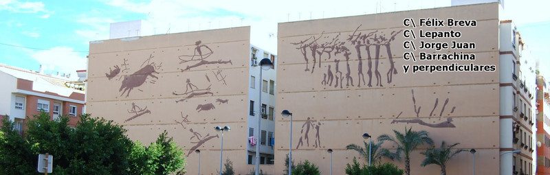
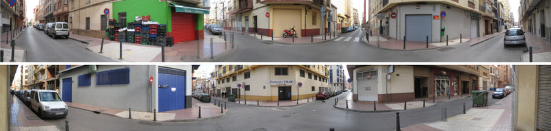

Mi nombre es Luis López y soy vecino del barrio del ensanche de Castellón y, excepto por unos pocos años, he vivido durante mis 33 años aquí. Me he decido a escribir esta carta para denunciar el lamentable estado en el que se encuentra mi barrio.
Para el que no lo conozcan está delimitado por la Ronda Mijares, la Gran Vía, la calle Pelayo y Maestría. En él podemos encontrar el CEIP Ejército y la plaza de las pinturas rupestres.
Está conformado como una cuadrícula, donde se mezclan bloques de edificios construidos en los años 80 con las tradicionales “casas de carro” de dos plantas.

Durante los últimos años (y podemos estar hablando de casi 10 años) los recursos que el Ayuntamiento ha dedicado a mantener el barrio han ido menguando dejándose notar en nuestras calles. El Ayuntamiento ha dejado de lado a este barrio permitiendo su degradación.
El barrio se encuentra sin seguridad, lleno de excrementos, orines, basura, alcantarillas embozadas, obras abandonadas y aceras rotas e intransitables.
Antes de detallar estos problemas tengo que decir que el Ayuntamiento está al corriente de todos ellos: durante los últimos 9 años se han enviado múltiples quejas a través del SMC, se han presentado instancias en el Ayuntamiento, hay llamadas a la policía, una reunión con la secretaria del delegado del gobierno, otra reunión con un inspector del Cuerpo Nacional de Policía y a principios de año hubo una reunión con el concejal del que depende el servicio de limpieza. Todo sin resultados y con el silencio como respuesta.
Puede que según vaya leyendo esta carta crea que son todo pequeñeces, cosas puntuales y que no molestan tanto, pero súmelas todas: basuras por aquí, excrementos y orín en las esquinas, aceras rotas, calzadas agrietadas, ausencia de vegetación, etc… Aquí parece que no le importa nada a nadie.
Si usted, el lector, es vecino del barrio o simplemente está interesado en nuestra situación puede contactar a través de la dirección de correo ensanchecs@gmail.com o en el grupo de Facebook: Vecinos ensanche de Castellón, donde puede encontrar esta información y mucha más.
Me gustaría que los representantes políticos (tanto en el gobierno como en la oposición) se preguntarán si consideran decente esta situación.
¿Acaso somos menos ciudadanos aquí?
¿Por qué debemos soportar esta dejadez?
¿Es aceptable esta situación de insalubridad?
¿Acaso no pagamos impuestos?
¿Quieren que acabemos creyendo que somos ciudadanos de segunda?
Y finalmente: ¿piensan hacer algo al respecto?
En nuestras calles los dueños de perros del barrio pasean a sus mascotas usando las aceras como “pipican”. Todo está lleno de excrementos y orines a todas horas y todos los días de del año. Es imposible caminar por esas aceras sin pisar un excremento o un charco de orín. Por si fuera poco, dichos orines dañan el mobiliario urbano (por ejemplo los bolardos de metal se oxidan y acaban rompiéndose incluso), manchas las aceras y ocasionan molestias a los vecinos que tienen que soportar los olores y la suciedad en sus portales.
Los primeros culpables son los dueños con su falta de civismo y educación. Pero no nos engañemos, el Ayuntamiento es tan culpable como ellos. Los excrementos pasan días y semanas en el suelo, secándose, algunos son pisados y arrastrados durante metros y metros. Y nadie los recoge. El Ayuntamiento es el responsable último de la limpieza, cosa que parece desconocer. Mientras tanto los orines se resecan en capas en esquinas, bolardos y portales que los vecinos intentan proteger con azufre.
¿Donde están las famosas campañas de concienciación de Ayuntamiento? ¿Donde esta la "Castelló neta" que tanto nos venden? ¿Es normal que un excremento se pase más de 7 días en el suelo sin que nadie lo limpie?.
Las alcantarillas, como es de esperar con tal falta de limpieza, están embozadas, llenas de bolsas, botellas y papeles, incluso en algún momento han salido ratas de ellas. El problema viene cuando llueve, pueden pasar dos cosas: o las alcantarillas están tan llenas que se embozan y las calzadas se convierten en rios, o que todos esos residuos salgan de nuevo arrastrando consigo desagradables olores y basura de meses.
El Ayuntamiento confía, en parte, este tipo de limpieza a la lluvia, así me dijo personalmente un concejal. Según parece la base de la limpieza en este barrio es la lluvia y en Castellón apenas llueve, es parte de la justificación. Por si fuera poco, jamás he visto pasar un camión de limpieza por agua a presión. También se me dijo que tal vez no los viera porque pasan por la noche, pero eso no es cierto, la suciedad sigue allí, agarrada, así que o no pasan o lo hacen de largo, simplemente.
Quiero añadir como apunte que el Ayuntamiento, en algún plan de empleo de los que suele anunciar, ha puesto a personas a quitar chicles del suelo en la avenida Rey don Jaime y las calles peatonales del centro, comparen. Los vecinos de este barrio también pagamos los impuestos que nos corresponden (que no son pocos).
Se ha denunciado en multitud de ocasiones el mal estado de dos obras en el barrio. La respuesta por parte del Ayuntamiento ha sido el silencio. Las obras llevan años paradas y sin vistas de continuar. Según he podido saber, en ambos casos, las empresas responsables están en concurso de acreedores. Sin embargo se dejaron los cuadros eléctricos, los cables de luz y teléfono colgando de postes de madera en mitad de las aceras, aceras que también han dejado destrozadas. Quiero señalar que estas obras se encuentran a escasos metros de un colegio.
Otro dato curioso que pone en evidencia la dejadez del Ayuntamiento en barrio es el número de papeleras y contenedores de reciclaje:
Entre la Gran Vía y República Argentina solo hay 6 papeleras, 1 si solamente contamos lo que es el propio macizo del barrio.
En toda la calle Jorge Juan no hay ninguna papelera.
En la calle Barrachina solo hay 3 papeleras.
En todo el barrio (35 manzanas) solo hay 5 puestos de reciclaje.
En total, no llega a una veintena de papeleras en 35 manzanas.
En cuanto al pavimento del barrio, hay zonas donde lleva 20 años sin renovarse, como por ejemplo en la calle Barrachina. Esto no es sólo un problema estético (bien por viejo o bien porque está estropeado), ese tipo de pavimento no es antideslizante y algunas aceras apenas al metro de ancho.
En las 15 manzanas comprendidas entre República Argentina, la ronda Mijares, la calle Pelayo y el Parque del Oeste no hay ningún árbol, cero. Uno puede pensar que es un detalle menor pero en una zona tan sucia, llena de bolardos oxidados y edificios demasiado altos para las calles, se necesita algo de color. Se necesita convertir la zona en un lugar habitable y no deshumanizado.
Las actividades culturales o al aire libre simplemente no existen, es algo que ni se plantea. Nunca jamás se ha visto una activadad para niños, alguna promoción, una actividad, un concierto al aire libre como los que están de moda ahora, un pasacalles en las fiestas de Magdalena…
Este barrio simplemente no existe para eso.
Finalmente quiero remarcar la absoluta ausencia policial en el barrio. Es prácticamente imposible encontrar a un policía en la zona haciendo una simple ronda, simplemente para controlar o evitar que los perros hagan sus necesidades en la acera. De hecho no creo haber visto nunca a ninguno. Esto sería un problema menor si cuando se llama al 092 la policía acudiera rápidamente.
En más de una ocasión se ha tenido que llamar para que controlaran los gritos, peleas o el consumo de porros en algún local de la zona, o para que les pegaran un toque a los chavales que se plantan con las cervezas un miércoles a las 6 de la tarde en la puerta del CEIP Ejercito. No puedo hablar bien del tiempo de respuesta de la policía: si acuden, que no es siempre el caso, tardan y cuando llegan no es habitual que se bajen del coche.
Lo grave es que el Ayuntamiento vende nuestro de modelo policía PROXPOL (policía de proximidad) como algo envidiable y exportable al resto del mundo (ellos hablan de México). Mientras tanto en otras zonas hay policía local o AMUs durante todo el día simplemente para vigilar un cruce o darle paso al TRAM.